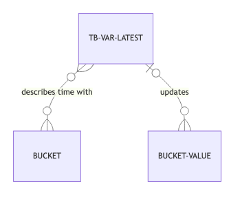

automaton-optimization.time-based.impl.var-latest
A tb-var that stores a measure m done at bucket b that is true for all subsequent buckets after b unless a new measure is done, at a later bucket.
- Each update of an already existing value is overwritten.
- The get-measure is returning the value at bucket
bor the value at the earlier non nil date (as this latest is still available according to this time based). - The values can be whatever, as no operation is done on it.
For instance, a stock level is such, since a new stock level will be recorded at that moment. Note that the order of the measures is not significant.

make
(make storage default-value)